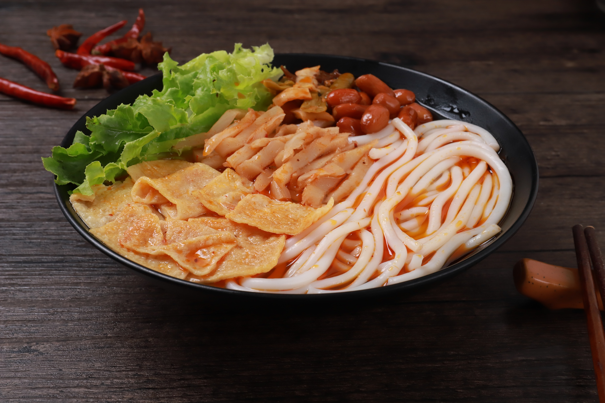

Welcome to zGoodFood
螺蛳粉是广西壮族自治区柳州市的小吃米粉，具有辣、爽、鲜、酸、烫的独特风味。它是柳州最具地方特色的名小吃。 螺蛳粉的味美还因为它有着独特的汤料。汤料由螺蛳、山奈、八角、肉桂、丁香、多种辣椒、等天然香料和味素配制而成。 2018年8月20日，“柳州螺蛳粉”获得国家地理标志商标。2008年，柳州螺蛳粉手工制作技艺入选广西壮族自治区第二批非物质文化遗产名录。 2019年3月21日，螺蛳粉发源地广西柳州官方表示，感谢海外友人的操心，螺蛳粉现在是广西非遗，正逐步申请国家和世界级非遗
More Details